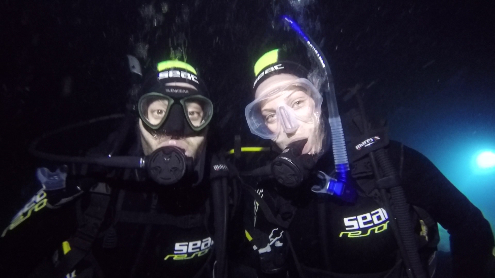

Es war uns ein Fest!
Die Gewinner des Tippspiels sind Jasper & Tina.
Impressum
Angaben gemäß § 5 Telemediengesetz (TMG):
Johannes Najjar
Lucia-Popp-Bogen 20
81245 München
Deutschland
Kontakt:
Tel.: +49 (0) 89 455 411 43
E-Mail: valeckjan@yahoo.de
Verantwortlicher für den Inhalt ist gemäß § 55 Abs. 2 Rundfunkstaatsvertrag (RStV):
Johannes Najjar
Lucia-Popp-Bogen 20
81245 München
Deutschland
Ausschluss der Haftung:
1. Haftung für Inhalte
Der Inhalt meiner Internetseite wurde mit größtmöglicher Sorgfalt erstellt. Ich übernehme jedoch keine Gewähr dafür, dass dieser Inhalt richtig, vollständig, und aktuell ist und zudem noch gefällt. Gemäß § 7 Abs. 1 TMG bin ich für den Inhalt verantwortlich, selbst wenn dieser bestellt wurde.
Gemäß den §§ 8, 9 und 10 TMG ist für mich keine Verpflichtung gegeben, dass ich Informationen von Dritten, die übermittelt oder gespeichert wurden, überwache oder Umstände erhebe, die Hinweise auf nicht rechtmäßige Tätigkeiten ergeben.
Davon nicht berührt, ist meine Verpflichtung zur Sperrung oder Entfernung von Informationen, welche von den allgemeinen Gesetzen herrührt.
Ich hafte allerdings erst in dem Moment, in dem ich von einer konkreten Verletzung von Rechten Kenntnis bekomme. Dann wird eine unverzügliche Entfernung des entsprechenden Inhalts vorgenommen.
2. Haftung für Links
Meine Internetseite enthält Links, die zu externen Internetseiten von Dritten führen, auf deren Inhalte ich jedoch keinen Einfluss habe. Es ist mir daher nicht möglich, eine Gewähr für diese Inhalte zu tragen.
Die Verantwortung dafür hat immer der jeweilige Anbieter/Betreiber der entsprechenden Internetseite. Ich überprüfe die von mir verlinkten Internetseiten zum Zeitpunkt der Verlinkung auf einen möglichen Rechtsverstoß in voller Breite.
Es kann mir jedoch, ohne einen konkreten Anhaltspunkt, nicht zugemutet werden, ständig die verlinkten Internetseiten inhaltlich zu überwachen. Wenn ich jedoch von einer Rechtsverletzung Kenntnis erlange, werde ich den entsprechenden Link unverzüglich entfernen, das kann ich machen.
3. Urheberrecht
Die auf meiner Internetseite enthaltenen Inhalte sind, soweit möglich, urheberrechtlich geschützt. Es bedarf einer schriftlichen Genehmigung des Erstellers für denjenigen, der die Inhalte vervielfältigt, bearbeitet, verbreitet oder nützt.
Das Herunterladen und Kopieren meiner Internetseite ist sowohl für den privaten als auch den kommerziellen Gebrauch von mir schriftlich zu gestatten. Ich weise darauf hin, dass ich hinsichtlich der Inhalte auf meiner Internetseite, soweit sie nicht von mir erstellt worden sind, das Urheberrecht von Dritten jederzeit beachtet hatte.
Wenn Sie mir mitteilen würden, dass Sie trotzdem eine Urheberrechtsverletzung gefunden haben, würde ich das sehr schätzen. Dann kann ich den entsprechenden Inhalt sofort entfernen und würde damit das Urheberrecht nicht mehr verletzen.
4. Datenschutz
Meine Internetseite kann regelmäßig ohne die Angabe von personenbezogenen Daten genutzt werden. Falls solche Daten (z.B. Name, Adresse oder E-Mail) doch erhoben werden sollten, geschieht das, freiwillig oder nur mit ausdrücklicher Zustimmung durch Sie und durch mich zu verbergen.
Die Übertragung von Daten im Internet ist mit Sicherheitslücken befangen. Es ist daher möglich, dass Dritte Zugriff auf diese Daten erlangen. Ein lückenloser Schutz ist nicht möglich, wenn auch löblich.
Ich widerspreche an dieser Stelle der Nutzung meiner Kontaktdaten, um mir damit nicht verlangte Werbung/Informationsmaterial/Spam-Mails zukommen zu lassen. Sollte dies dennoch geschehen, müsste ich rechtliche Schritte ins Auge fassen.
Angabe der Quelle: Flegl Rechtsanwälte GmbH